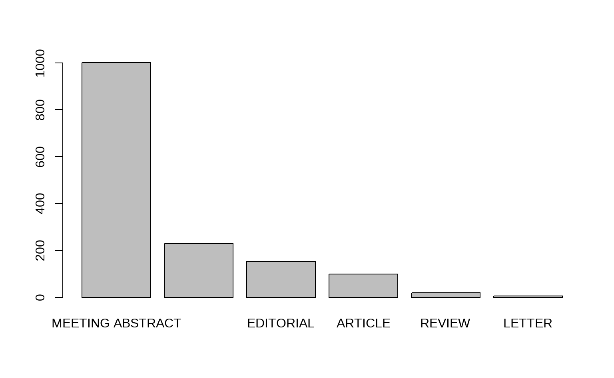

B 文献筛选
B.1 如何确定核心文献？
在最初阶段我们的分析依赖于全部的5万多篇文献，但是我们很快发现这个数据量在进行较复杂的分析时，一方面会导致计算量比较大，另一方面也没有必要完整覆盖。因此寻找一个方法确定核心文献十分必要。高被引论文虽然是一个备选，但是高被引论文针对的是大的学科领域，可能并不能凸显论文对道菌群研究的重要性。且我们也可以发现2009年前是没有高被引论文在这5万多篇文献中存在的，因此对于一些特别经典的菌群研究论文有所遗漏。因此我们使用本地被引频次这个参数对文献做了一定的筛选，即将每年本地被引频次排在前 5% 的文献作为关键文献，进行了更为充分的分析。
我们看一下本地被引频次的含义。 本地被引频次，即 Local Citation Score（LCS），它表示这篇文章在当前数据集中被引用的次数。 全局引用次数，即 Global Citation Score （GCS），它表示这篇文章被整个WOS数据库中所有文献引用的次数，也就是在 Web of Science 网站上看到的引用次数。 一篇文章GCS很高，说明被全球科学家关注较多。但是如果一篇GCS很高，而LCS很小，说明这种关注主要来自与你不是同一领域的科学家。此时，这篇文献对你的参考意义可能不大。如果 LCS 很高，则说明这篇文献与你数据集中关注的领域十分相关。所以，使用 LCS 可以快速定位一个领域的经典文献。
值得一提的是，我们按照 LCS 前 5% 筛选后得到的文献共有 2690 篇，其中覆盖了约三分之二的WoS高被引论文，比WoS高被引论文少了700多篇。不过，另外新增了约800多篇新文献（图 1.1）。
图 B.1 显示这些论文的差别主要在哪些年份。
图 B.1: 高被引和核心论文的差别
B.1.1 文献清单
针对于图 1.1 中的差异，我们分别统计了仅在LCS核心论文中出现和仅在高被引论文中出现的文章列表。
图 B.2: 仅在LCS核心论文中出现的文章
下面的表格列出了仅在WoS高被引论文中出现的文章（图 B.3）。
图 B.3: 仅在WoS高被引论文中出现的文章
下面的表格列出了既为WoS高被引又为LCS核心论文的文章（图 B.4）。
图 B.4: 既为WoS高被引又为LCS核心论文的文章
B.1.2 近两年的研究进展
特别关注近两年的最新研究进展。 下面是依据LCS筛选得到的最近两年研究论文（图 B.5）。
图 B.5: 近两年的重要研究论文（LCS高被引）
下面是《热心肠日报》中收录的最近两年发表的影响因子大于20的研究论文（图 B.6）。
图 B.6: 日报中收录的影响因子＞20的高水平研究论文
B.1.3 重点论文
重要文章，综合考虑引用和影响因子，即LCS高被引文章+当年高分文章（按IF排序取前5%）
- 论文列表（区分文章类型）
- 按关键词聚类：高频关键词列表（前50），以及每个关键词对应的文章列表 ① 仅分析研究论文 ② 仅分析综述 ③ 全部文章类型
- 按关键词共现聚类：高频共现关键词列表（取前50），以及每组共现关键词对应的文章列表 ① 仅分析研究论文 ② 仅分析综述 ③ 全部文章类型
图 B.7: 近三年的重点论文
B.2 数据库资料信息不全的情形
国家信息不全的文章有 1893 篇，大多属于信息采集不完整的情况（表B.1），并非软件本身存在的错误所致。数据采集不完整的情况暂时无法解决。

| SR | C1 | AU_CO_NR | |
|---|---|---|---|
| LORENZ J, 2019, Z GEBURTSH NEONATOL | LORENZ J, 2019, Z GEBURTSH NEONATOL | NA | NA |
| [ANONYMOUS], 2019, FOOD TECHNOL-CHICAGO | [ANONYMOUS], 2019, FOOD TECHNOL-CHICAGO | NA | NA |
| STOWER H, 2019, NAT MED | STOWER H, 2019, NAT MED | NA | NA |
| MINTON K, 2019, NAT REV IMMUNOL | MINTON K, 2019, NAT REV IMMUNOL | NA | NA |
| PANDEYA DR, 2019, J GASTROEN HEPATOL | PANDEYA DR, 2019, J GASTROEN HEPATOL | [PANDEYA, DIPENDRA RAJ] MED UNIV AMER, CHARLESTOWN, ST KITTS & NEVI. | NA |
| REYMAN M, 2019, NAT COMMUN | REYMAN M, 2019, NAT COMMUN | NA | NA |
| ERNITS K, 2019, SCI REP-UK | ERNITS K, 2019, SCI REP-UK | NA | NA |
| BAMPIDIS V, 2019, EFSA J | BAMPIDIS V, 2019, EFSA J | NA | NA |
| BAMPIDIS V, 2019, EFSA J-a | BAMPIDIS V, 2019, EFSA J-a | NA | NA |
| BAMPIDIS V, 2019, EFSA J-a-b | BAMPIDIS V, 2019, EFSA J-a-b | NA | NA |
bibliometrix 使用一个控制字段提取机构信息，一些机构名称不含下列控制字段，因此导致机构信息提取失败。为此，我们拟使用自定义函数改进提取机制。
uTags=c("UNIV","COLL","SCH","INST","ACAD","ECOLE","CTR","SCI","CENTRE","CENTER","CENTRO","HOSP","ASSOC","COUNCIL",
"FONDAZ","FOUNDAT","ISTIT","LAB","TECH","RES","CNR","ARCH","SCUOLA","PATENT OFF","CENT LIB","HEALTH","NATL",
"LIBRAR","CLIN","FDN","OECD","FAC","WORLD BANK","POLITECN","INT MONETARY FUND","CLIMA","METEOR","OFFICE","ENVIR",
"CONSORTIUM","OBSERVAT","AGRI", "MIT ", "INFN", "SUNY ")改进后的机构信息提取机制更加准确。表 ?? 表示新旧方法得出不同机构信息字段的比较。C1 是作者信息字段，AU_UN 是 bibliometrix 软件提取的机构信息，AU-UN2 是改进提取方法后得出的机构信息。经过比较，可以发现新方法提取的信息更加准确和完整。
这幅图中显示的表格支持交互操作，可以点击标题排序、在搜索框搜索和按不同的行过滤，也可以点击按钮导出数据为 Excel 文件。↩︎